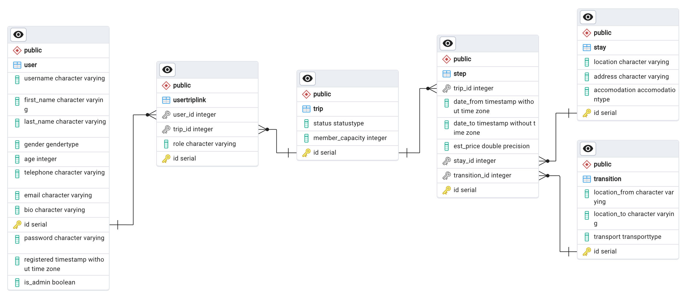

ЛР 1. Реализация серверного приложения FastAPI.
База данных
Схема базы данных

Скрипт подключения к БД
connection.py
from sqlmodel import SQLModel, Session, create_engine
import os
from dotenv import load_dotenv
load_dotenv()
db_url = os.getenv('DB_ADMIN')
engine = create_engine(db_url, echo=True)
def init_db():
SQLModel.metadata.create_all(engine)
def get_session():
with Session(engine) as session:
yield session